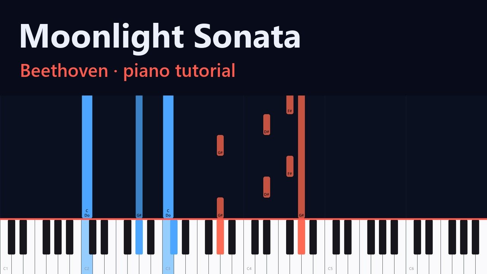

Aprende piano, una nota a la vez.
Sigue las notas que caen y toca tus piezas favoritas. Tutoriales, partituras y archivos MIDI gratuitos para practicar a tu ritmo.
Descubre la app
Claro de lunaVer tutorial
Tutoriales de piano
Elige tu primera pieza


Piano Learning
Toca a tu ritmo
La música espera hasta que toques la nota correcta. Reduce la velocidad, practica cada mano por separado o usa el micrófono para tocar en tu piano.
Los grandes compositores
Quiénes eran, curiosidades de su vida y consejos para tocar su música.
Los 14 compositores